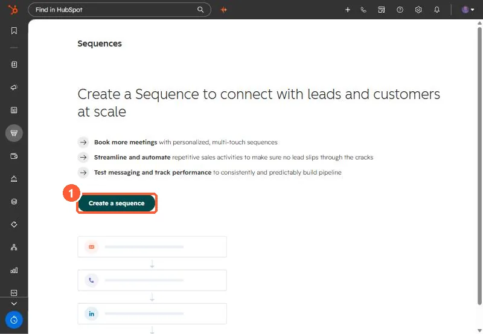

Short answer
By default, a contact leaves a sequence when they reply to any sequence email or book a meeting through a meetings link in a sequence step. HubSpot's KB also lists less obvious cases: a reply from a different address, a reply from someone at the same company if you chose to unenroll the company, and a meeting booked on the record or a synced calendar when it is with the user who enrolled them. You can switch the reply and meeting triggers off in the sequence settings.
1. The defaults
Contacts are unenrolled when they reply to any email in the sequence or book a meeting through a meetings link included in a step. Start from Sequences.


2. The edge cases
- A reply from a different email address still unenrolls the contact.
- If the sequence is set to unenroll the company, a reply from anyone at that company, even to an email outside the sequence, unenrolls them.
- A meeting booked through any meetings link in a sequence email counts, even if it is not yours.
- A meeting booked on the record or on a synced calendar counts only if it is with the user who enrolled the contact. Logged meetings must be associated with the contact, including ones logged with a past date during enrollment.
3. Turn triggers off
In the sequence settings, under Automate your sequence, switch off When a contact replies to any email or When a contact books a meeting. For each one left on, choose whether it unenrolls just the contact or others at the company.